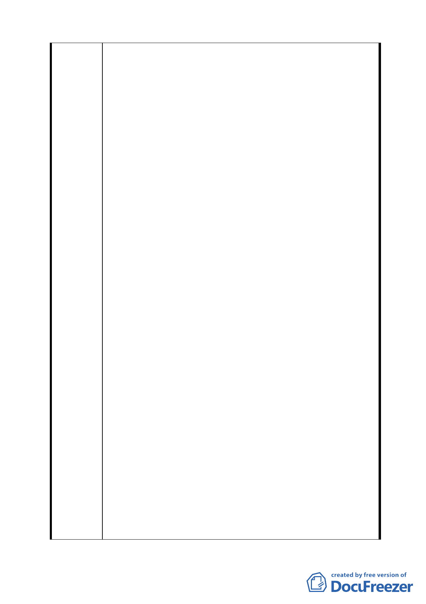

無新光資產管理股份有限公司之土地，其詳情為何？
3. 交通運輸現況及動線系統：目前新光醫院之車輛主要藉由南
側 12 公尺之私有巷道進出，惟其在 93 年 2 月所規劃，上列
私設巷道為供商業使用，未來該巷道廢止後，交通狀況及動
線為何？本計畫並未提及。
4. 公共設施：現有新光醫院北側規劃為公園用地，做為醫院與
基地北側住宅區之緩衝空間，同時保留區內既成道路之通行
功能，在公園四周請留設 1.2~1.5 公尺之行人步道，作為人
行之用，並保障行人之安全。
5. 本細部計畫陸、計畫內容 一、計畫人口：新光醫院目前現
有總病床數 921 床，總員工數 2,045 人，預估未來擴建開發
完成後，總病床數增加為 1,278 床，總員工數為 2,413 人，
總計畫活動人口共計約 3,700 人。上列所敘與事實相差甚
遠，請問新光醫院一天門診看診人數有多少？陪同病患看診
人數又有多少？住院病患照顧者又有多少？探病者又有多
少？該計畫書皆省略未估計。保守估計一天進出新光醫院人
數初估應會超過 2 萬人，其對交通之衝擊、停車位之需求、
環境之影響，對居民生活層面之不便，均未提及。尤其以機
車亂停、汽車違規停車、侵入社區停車，造成治安死角。
6. 依據本細部計畫陸、計畫內容 四、回饋計畫（一）依據「都
市計畫工業區檢討變更審議規範」之規定，工業區變更為特
定專用區之自願捐贈土地比例，依各目的事業中央主管機關
訂定之該特定專用區設置管理辦法、審核要點或審議規範等
相關規定辦理；其無相關規定可資依循者，由各級都市計畫
委員會視實際情況審決，本計畫對環境衝擊太大，故並非如
申請人所敘，本計畫案自工業區變更醫療服務專用區部分得
免提供自願捐贈土地及回饋計畫。
7. 依本細部計畫陸、計畫內容 四、回饋計畫（二）醫療服務
專用區內陽明段四小段 187-4（部分）、187-6、188-6、
188-8、188-9、190-1、190-2 等 7 筆地號，依衛生署 94 年
5 月 26 日衛署醫字第 0940018812 號函核定之允建樓地板面
積為 34,700 平方公尺，超過原計畫容積率 200%（第 2 種工
業區）允許興建樓地板面積部分，屬醫療設施之服務，由申
請人以提供下列項目服務社會作為回饋，並於主要計畫核定
前與市府訂定使用契約，其回饋金額如何計算，請告知。
有關回饋計畫應增列如下回饋事項：
（1）里民看診掛號費優待（國泰醫院對於當地里有
此項優惠）。
7